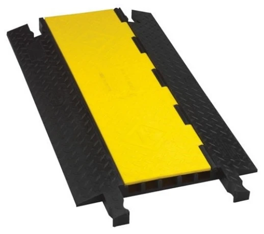

通路の幅
何 m 分をまたぐかで、連結する台数が決まります。
現場を動かす・支える ↗EQUIPMENT
ケーブルプロテクター
通路を横切るケーブルを 5 本の溝にまとめ、黄色のふたで覆う床置きのケーブルプロテクター。人の足元と台車の通り道を、ケーブルから守ります。
KEY SPECIFICATIONS

画像を大きく見る ＋01 / ROLE & FLOW
実際の構成は案件に合わせて決めます。
02 / BEFORE YOUR BRIEF
何 m 分をまたぐかで、連結する台数が決まります。
溝に入る外径は 1.0 in まで。太い電源ケーブルは事前に確認します。
来場者動線か、台車・車両が通るかをお聞かせください。
屋外の段差や傾斜、養生の有無を確認します。
03 / CHOOSING THE RIGHT TOOL
客席や通路を横切って操作卓まで信号と電源を引くとき。展示会の通路、屋外会場の動線、搬入口の横断に。
同じシリーズに 1〜5 チャンネルの型があります。本数が少なければ細い型で足ります。電源と信号を同じ溝に入れず、溝を分けて使います。
メーカー公式ページに掲載の YJ5-125-Y/B(黄色のふた・黒のベース)の値です。耐荷重はメーカー公式ページ内で表記が分かれているため、ここには載せていません。手配する型式と台数は、手配時に照合します。
出典：Checkers Safety 公式 5 Channel Heavy Duty Yellow Jacket ↗（2026年11月9日照合）
日程・台数、設置場所と搬入経路、電源、担当範囲をお聞かせください。本体・周辺機材・搬入出・設営・本番操作・撤去を分けて、必要な範囲を整理します。